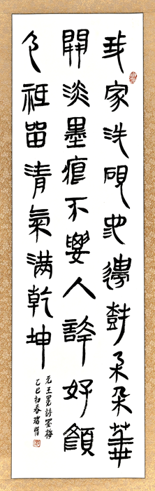

會員作品香港銀雀山漢簡書法藝術展
Artworks_Hong Kong YQS Han Boomboo Slips Calligraphy Exhibition

陳定璟老師
作品:王羲之《蘭亭序》
釋文： 永和九年，歲在癸丑，暮春之初，會於會稽山陰之蘭亭，修禊事也。群賢畢至，少長咸集。此地有崇山峻嶺，茂林修竹；又有清流激湍，映帶左右，引以為流觴曲水，列坐其次。雖無絲竹管弦之盛，一觴一詠，亦足以暢敘幽情。是日也，天朗氣清，惠風和暢，仰觀宇宙之大，俯察品類之盛，所以遊目騁懷，足以極視聽之娛，信可樂也。夫人之相與，俯仰一世，或取諸懷抱，悟言一室之內；或因寄所托，放浪形骸之外。雖取舍萬殊，靜躁不同，當其欣於所遇，暫得於己，怏然自足，不知老之將至。及其所之既倦，情隨事遷，感慨系之矣。向之所欣，俯仰之間，已為陳跡，猶不能不以之興懷。況修短隨化，終期於盡。古人云：「死生亦大矣。」豈不痛哉！每覽昔人興感之由，若合一契，未嘗不臨文嗟悼，不能喻之於懷。固知一死生為虛誕，齊彭殤為妄作。後之視今，亦猶今之視昔。悲夫！故列敘時人،錄其所述،雖世殊事異،所以興懷،其致一也。後之覽者،亦將有感於斯文。

陳寅添
作品:孫武《孫子兵法 始計篇》
釋文：孫子曰：兵者，國之大事也；死生之地，存亡之道，不可不察也。故經之以五，效之以計，以索其情。一曰道，二曰天，三曰地，四曰將，五曰法。道者，令民與上同意者也；故可與上之死，可與之生，民弗詭也。天者，陰陽、寒暑、時制也；順逆，兵勝也。地者，高下、廣陜、遠近、險易、死生也。將者，智、信、仁、勇、嚴也。法者，曲制、官道、主用也。凡此五者，勝弗知將，莫不聞知之者勝，弗知者不勝，故效之以計， 以索其情。曰：主孰有賢將，孰能天地，孰得法令，孰行兵眾，孰強士卒，孰練賞罰，孰明吾以此知勝負矣。將聽吾計，用之必勝，留之；不聽吾計，用之必敗，去之。計利以聽，乃為之勢，以佐其外；勢者，因利而制權也。兵者，詭道也；能而視之為，遠而視示之近，故利。

葉潔華
作品:銀雀山漢墓出土的治國文獻《五議》
釋文： 五議，有國之五議，一曰：百言有本，千言有要，萬言有總。能總言能知言之所至者也。能知言之所至，能為有天下、有國者定治之高庳，不能知言之所至，不能為有天下、有國者定治之高庳有國之一議也。二曰：者也，能知知之所至，能為有天下、有國者定可與。不可；不能知知之所至，不能為有天下、有國者定可與不可。有國之二議也。三曰：言用行行而天下安樂，能極得也。能極得，萬民親之天地與之，鬼神相助；不能極得，萬民弗親，天地弗與，鬼神弗助。有國之三議也。四曰：天不言，萬民走其時；地不言，萬民走亓其財。能知此，知治之所至者也。能知之所至，能不以國亂，能不以國危；不能知治之所至，不能不以國亂不能不以國危。有國之四議也。五曰 治也，能知極不可亂之治能不以國惑不能知極可亂之治不能不以國惑，不能不以國怠。有國之五議也。 五議，有國之所以觀也。此有國者之所以觀。

雷雲櫻
作品:《孫臏兵法-見威王》
釋文：孫子見威王，曰：「夫兵者，非士恆勢也。此先王之傳道也。戰勝，則所以在亡國而繼絕世也。戰不勝，則所以削地而危社稷也。 是故兵者不可不察。然夫樂兵者亡，而利勝者辱。兵非所樂也，而勝非所利也。事備而後動，故城小而守固者，有委也；卒寡而兵強者，有義也。夫守而無委，戰而無義，天下無能以固且強者。素佚而至利也。戰勝而強立，故天下服矣。」

李麗明
作品:《元曲兩首》
釋文 :
(1） 馬致遠 《撥不斷》
布衣中，問英雄，王圖霸業成何用？禾黍高低六代宮，楸梧遠近千官塚，一場惡夢。
(2）關漢卿 《四塊玉・閒適（其四）》
南畝耕，東山臥，世態人情經歷多。閒將往事思量過，賢的是他，愚的是我。爭甚麼？

周宇菁
作品:屈原《天問》
釋文 :曰：遂古之初，誰傳道之？
上下未形，何由考之？
冥昭瞢暗，誰能極之？
馮翼惟象，何以識之？
明明暗暗，惟時何為？
陰陽三合，何本何化？
圜則九重，孰營度之？
惟茲何功，孰初作之？
斡維焉系，天極焉加？
八柱何當，東南何虧？
九天之際，安放安屬？
隅隈多有，誰知其數？
天何所沓？十二焉分？
日月安屬？列星安陳？

陳秀敏
作品:蘇軾《水調歌頭 . 明月幾時有》
釋文 : 明月幾時有？把酒問青天。不知天上宮闕，今夕是何年？我欲乘風歸去，又恐瓊樓玉宇，高處不勝寒。 起舞弄清影，何似在人間？轉朱閣，低綺戶，照無眠。不應有恨，何事長向別時圓？人有悲歡離合，月有陰晴圓缺，此事古難全。但願人長久，千里共嬋娟。

麥瑞惜
作品:王冕《墨梅》
釋文 : 我家洗硯池邊樹，朵朵花開淡墨痕。不要人誇好顏色，只留清氣滿乾坤。

張明明
作品:《對聯》
釋文 : 春回雨點溪聲裡 人醉梅花竹影中

譚若紅
作品:毛澤東《為李進同志題所攝廬山仙人洞照》
釋文： 暮色蒼茫看勁松，亂雲飛渡仍從容。天生一個仙人洞，無限風光在險峰。

哈殿昌
作品:杜牧《題宣州開元寺水閣閣下宛溪夾溪居人》
釋文：深秋簾幕千家雨 落日樓臺一笛風

蔡敏潔
作品:《心隨意轉》
釋文：扇面 - 心隨意轉 ; 對聯 - 雲淡風輕詩世界 雨清竹翠畫乾坤

劉寶枝
作品:杜牧《贈別》
釋文：多情卻似總無情，唯覺樽前笑不成。蠟燭有心還惜別，替人垂淚到天明。

朱婉儀
作品:李白《清平调·其一》
釋文： 雲想衣裳花想容，春風拂檻露華濃。若非羣玉山頭見，會向瑤臺月下逢。

蕭美玉
作品:李清照《如夢令·常記溪亭日暮》
釋文： 常記溪亭日暮，沉醉不知歸路。興盡晚回舟，誤入藕花深處。爭渡，爭渡，驚起一灘鷗鷺。

黃燕雲
作品:《漢簡墨韻》
釋文：漢簡墨韻 華夏智慧

何文娟
作品:《小齋宴座》
釋文：心清自得詩書味 室雅常聞翰墨香

何文卿
作品:張旭《山中留客》
釋文：山光物態弄春暉，莫為輕陰便擬歸。縱使晴明無雨色，入雲深處亦沾衣。

陳素娟
作品:林和靖《詩聯》
釋文：疏影橫斜水清淺 暗香浮動月黃昏

陳映珊
作品:李翱《贈藥山高僧惟巖其二》
釋文：選得幽居愜野情，終年無送亦無迎。有時直上孤峯頂，月下披雲嘯一聲。

羅裕華
作品:《聖經》
釋文： 我知道怎樣處卑賤，也知道怎樣處豐富或飽足或飢餓或有餘或缺乏，隨事隨在我都得了秘訣，我靠著那加給我力量的，凡事都能作。

趙淑琴
作品:辛棄疾《青玉案 · 元夕》
釋文：東風夜放花千樹，更吹落、星如雨。寶馬雕車香滿路。鳳簫聲動，玉壺光轉，一夜魚龍舞。蛾兒雪柳黃金縷，笑語盈盈暗香去。眾裏尋他千百度；驀然回首，那人卻在、燈火闌珊處。

羅桂芳
作品:曹操《龜雖壽》
釋文： 神龜雖壽，猶有竟時。騰蛇乘霧，終爲土灰。老驥伏櫪，志在千里。烈士暮年，壯心不已。盈縮之期，不但在天；養怡之福，可得永年。幸甚至哉，歌以詠志。

吳宏豪
作品:李白《酬中都小吏攜斗酒雙魚於逆旅見贈》
釋文： 魯酒若琥珀，汶魚紫錦鱗。山東豪吏有俊氣，手攜此物贈遠人。意氣相傾兩相顧，斗酒雙魚表情素。雙鰓呀呷鰭鬣張，撥技剌銀盤欲飛去。呼兒拂几霜刃揮，紅肌花落白雪霏。爲君下箸一餐飽，醉著金鞍上馬歸。

彭雅好
作品:《聖經 歌羅西書三章十二節》
釋文 ： 所以你們既是神的選民，聖潔蒙愛的人，就要存憐憫、恩慈、謙虛、溫柔、忍耐的心。

陳妙婷
作品:《劍膽琴心》

林秀芬
作品:張籍《秋思》
洛陽城裏見秋風，欲作家書意萬重。復恐匆匆說不盡，行人臨發又開封。